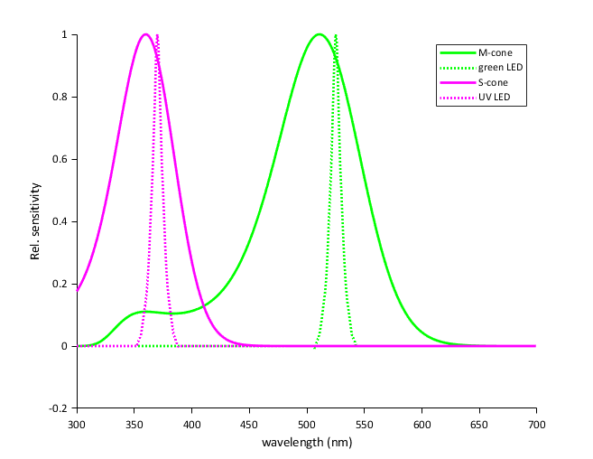
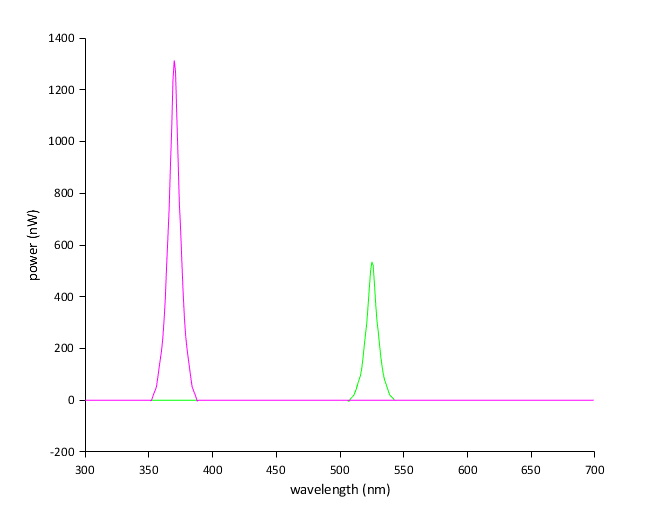
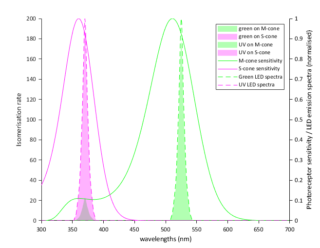

Photoreceptor Quantification & Spectral Calculations
To achieve biologically meaningful visual stimulation in neuroscience and psychophysics, optical power emitted by the LEDs must be quantified in terms of photoisomerisation rates (\(R^*\)) per photoreceptor type per second (\(\text{isomerisations}/\text{photoreceptor}/\text{s}\), or \(10^3\,R^*\)).
This page provides a complete walkthrough of the calibration script Calibration/ganzfeldCalibration_v5.m, which implements the biophysical framework developed by Euler Lab in the Open Visual Stimulator project.
Calibration Logic & Workflow
The calibration mathematics connects biological target regimes to physical bench measurements through two directional flows:
1. Forward Calculation (Data Analysis in MATLAB)
Converts an empirical optical power meter or photodiode reading into absolute photoisomerisation rates (\(R^*\)):
- Purpose: Quantifies exactly how many photoisomerisations per cone or rod per second are elicited by the current stimulator output.
- Implementation: Executed automatically by
Calibration/ganzfeldCalibration_v5.m.
2. Inverse Calculation (Experimental Bench Calibration)
Works backwards from a desired physiological adaptation state to determine the required reading on the power meter console:
- Purpose: Tells the experimenter the exact target reading (\(\mu\text{W}\)) to set on the Thorlabs power meter console when adjusting the driver board potentiometers at 100% duty cycle.
- Linear Scaling: Because the forward transfer function from radiant power to photoisomerisation rate is strictly linear, the inverse mapping is an exact scalar proportionality.
1. Physical Constants & Biological Parameters
The calculations in ganzfeldCalibration_v5.m rely on physical constants and experimentally verified mouse ocular properties:
Physical Constants
| Variable | MATLAB Name | Value | Unit | Description |
|---|---|---|---|---|
| \(h\) | h |
\(4.135667 \times 10^{-15}\) | \(\text{eV}\cdot\text{s}\) | Planck's constant |
| \(c\) | c |
\(299,792,458\) | \(\text{m/s}\) | Speed of light in vacuum |
| — | eV_per_J |
\(6.242 \times 10^{18}\) | \(\text{eV/J}\) | Conversion factor from Joules to electron-volts |
Photoreceptor Parameters (Mouse)
Photoreceptor opsin absorbance profiles are loaded from Calibration/mouse_cone_opsins.txt:
| Photoreceptor | MATLAB Name | Peak Wavelength (\(\lambda_{\text{peak}}\)) | End-on Collection Area (\(a_c, a_r\)) | Sensitivity Profile (\(S_{\text{PR}}(\lambda)\)) | Reference |
|---|---|---|---|---|---|
| M-cone | mouse_M_cone |
\(511\text{ nm}\) | \(0.2\,\mu\text{m}^2\) | mouse_opsins.Mopsin |
Nikonov et al., 2006 |
| S-cone | mouse_S_cone |
\(360\text{ nm}\) | \(0.2\,\mu\text{m}^2\) | mouse_opsins.Sopsin |
Nikonov et al., 2006 |
| Rod | mouse_rod |
\(510\text{ nm}\) | \(0.5\,\mu\text{m}^2\) | mouse_opsins.Mopsin |
Nikonov et al., 2006 |
Collection Area (\(a_c, a_r\))
The end-on light collection area (\(a_c = 0.2\,\mu\text{m}^2\) for dark-adapted wt mouse cones, \(a_r = 0.5\,\mu\text{m}^2\) for rods) represents the effective physical cross-section through which incoming photons are captured and absorbed by outer segment opsin molecules.

Ocular & Anatomical Properties
- Pre-retinal Ocular Transmission (\(T_{\text{eye}}(\lambda)\)): Loaded from
Calibration/Transmission_mouse_eye.txt, accounting for wavelength-dependent absorption by the cornea, crystalline lens, and vitreous humor (especially significant in the near-UV band \(< 400\text{ nm}\)). - Pupil Area (\(A_{\text{pupil}}\)):
- Stationary state: \(A_{\text{pupil}} \approx 0.21\,\text{mm}^2\)
- Running / Dilated state: \(A_{\text{pupil}} \approx 1.91\,\text{mm}^2\)
-
Retinal Surface Area (\(A_{\text{retina}}\)): For an adult mouse eye with axial length \(d = 3.0\text{ mm}\) (\(r = 1.5\text{ mm}\)):
\[A_{\text{retina}} \approx 0.6 \cdot \pi \cdot d^2 = 0.6 \cdot \pi \cdot (3.0\,\text{mm})^2 \approx 16.96\,\text{mm}^2\] -
Pupil-to-Retina Geometric Ratio:
\[k_{\text{pupil}} = \frac{A_{\text{pupil}}}{A_{\text{retina}}} = \frac{1.91\,\text{mm}^2}{16.96\,\text{mm}^2} \approx 0.1126\]
Sensor Parameters
- Thorlabs Photodiode Sensor (S121C, S120VC, S130VC):
- Active Sensor Area: \(A_{\text{detect}} = 9700\,\mu\text{m} \times 9700\,\mu\text{m} = 94.09 \times 10^6\,\mu\text{m}^2 = 94.09\,\text{mm}^2\)
- Calibrated responsivity curve \(R(\lambda)\) loaded from
Calibration/PowerMeterCalibrationFiles/.
- Thorlabs PDA100A2 Amplified Sensor:
- Active Sensor Area: \(A_{\text{detect}} = 75.4 \times 10^6\,\mu\text{m}^2 = 75.4\,\text{mm}^2\)
2. Forward Calculation: Power Meter to \(R^*\)
Here is the exact mathematical sequence executed in Calibration/ganzfeldCalibration_v5.m:
Step 1: Broad-Band Sensor Responsivity Correction
Optical power meters (such as the Thorlabs PM100D) compute power by dividing the measured detector photocurrent by the sensor responsivity at a single user-entered calibration wavelength: \(R(\lambda_{\text{meas}})\). Because LEDs have a broad spectral emission \(S(\lambda)\) (typically \(20-40\text{ nm}\) FWHM), the raw meter reading \(P_{\text{meas}}\) is biased.
The true radiant power \(P_{\text{true}}\) is recovered using Calibration/getLEDSpectraFromPowerMeter.m:
The absolute spectral power distribution \(P(\lambda)\) across 1-nm bins (\(\Delta\lambda = 1\text{ nm}\)) from \(300\text{ nm}\) to \(699\text{ nm}\) is:

Alternative: PDA100A2 Amplified Photodiode
If using the PDA100A2 transimpedance photodiode (Calibration/getLEDSpectraFromPhotodiode.m):
Step 2: Pre-Retinal Transmission & Retinal Geometry
The spectral power reaching the photoreceptor outer segment layer inside the eye is attenuated by the ocular media \(T_{\text{eye}}(\lambda)\) and scaled by the pupil-to-retina area ratio:
Step 3: Spectral Overlap & Relative Co-Excitation
For LED \(i\) and photoreceptor type \(j\), the relative spectral co-excitation fraction is calculated from the normalized spectral overlap:
Where \(S_{\text{LED\_corr\_norm}, i}(\lambda)\) is the peak-normalized retinal LED spectrum.
Step 4: Photon Energy, Photon Flux Density & Isomerisation Rate
-
Wavelength-dependent photon energy (\(Q(\lambda)\) in \(\text{eV}\)):
\[Q(\lambda) = \frac{h \cdot c}{\lambda \cdot 10^{-9}}\] -
Spectral photon flux (\(\Phi_{\text{photon}}(\lambda)\) in \(\text{photons/s}\)):
\[\Phi_{\text{photon}}(\lambda) = \frac{P_{\text{retina}}(\lambda) \cdot (\text{eV\_per\_J})}{Q(\lambda)}\] -
Photon flux density arriving at the sensor detector plane (\(E(\lambda)\) in \(\text{photons}/(\text{s}\cdot\mu\text{m}^2)\)):
\[E(\lambda) = \frac{\Phi_{\text{photon}}(\lambda)}{A_{\text{detect}}}\] -
Total photoisomerisation rate (\(R^*\) in \(\text{isomerisations}/\text{photoreceptor}/\text{s}\)):
\[R^*_{i,j} = a_{\text{collect}, j} \cdot \text{Co-excitation}_{i,j} \int E_i(\lambda) \, d\lambda\]
In ganzfeldCalibration_v5.m, rates are reported in units of \(10^3\,R^*/\text{s}\) (\(10^3\,\text{photons/s}\)).

3. Working Backwards: From Target \(R^*\) to Measured Power
In experimental design, you start with a target photoisomerisation rate \(R^*_{\text{target}}\) (e.g. \(10^4\,R^*/\text{cone/s}\)) and need to determine the exact power reading to calibrate the hardware to at 100% duty cycle.
Because the forward pipeline from radiant power to \(R^*\) is strictly linear:
Inverse Calibration Procedure
- Run a Reference Calibration in MATLAB:
Execute
ganzfeldCalibration_v5.mwith an arbitrary reference power \(P_{\text{ref}}\) (e.g. \(P_{\text{meas, ref}} = 6.05\,\mu\text{W}\)). Record the resulting reference photoisomerisation rate \(R^*_{\text{ref}}\). -
Compute the Required True Power (\(P_{\text{true, target}}\)):
\[P_{\text{true, target}} = P_{\text{true, ref}} \cdot \left(\frac{R^*_{\text{target}}}{R^*_{\text{ref}}}\right)\] -
Compute the Target Power Meter Reading (\(P_{\text{meas, target}}\)): For your power meter console set to wavelength \(\lambda_{\text{meas}}\):
\[P_{\text{meas, target}} = \frac{P_{\text{true, target}}}{C_{\text{factor}}}\] -
Physical Adjustment at the Rig:
- Set the LED channel to 100% duty cycle (
sd, 100, 0for Green,sd, 0, 100for UV). - Turn the channel's multi-turn potentiometer on the driver PCB with an insulated trimmer tool until the console reads exactly \(P_{\text{meas, target}}\).
Concrete Worked Numerical Example
Based on the actual calibration values from Calibration/ganzfeldCalibration_v5.m using a Thorlabs S121C sensor (\(A_{\text{detect}} = 94.09\,\text{mm}^2\)) and running mouse eye geometry (\(A_{\text{pupil}} = 1.91\,\text{mm}^2\)):
Channel A: Green LED (\(\lambda_{\text{peak}} \approx 525\text{ nm}\))
- Measurement Wavelength Setting: \(\lambda_{\text{meas}} = 525\text{ nm}\)
- Sensor Responsivity Correction: \(C_{\text{factor, Green}} \approx 1.018\)
- Target Photoisomerisation Rate: \(R^*_{\text{target, M-cone}} = 25.0 \times 10^3 \, R^*/\text{cone/s}\)
-
Calculation:
- A power meter reading of \(P_{\text{meas}} = 6.05\,\mu\text{W}\) yields \(P_{\text{true}} = 6.16\,\mu\text{W}\), producing an M-cone isomerisation rate of \(R^* = 25.32 \times 10^3\,R^*/\text{cone/s}\).
-
To set an exact target of \(25.0 \times 10^3\,R^*/\text{s}\):
\[P_{\text{meas, target}} = 6.05\,\mu\text{W} \cdot \left(\frac{25.0}{25.32}\right) = 5.97\,\mu\text{W}\]
-
Action: Adjust the Green channel trimpot until the PM100D reads \(5.97\,\mu\text{W}\).
Channel B: UV LED (\(\lambda_{\text{peak}} \approx 370\text{ nm}\))
- Measurement Wavelength Setting: \(\lambda_{\text{meas}} = 370\text{ nm}\)
- Sensor Responsivity Correction: \(C_{\text{factor, UV}} \approx 1.042\)
- Target Photoisomerisation Rate: \(R^*_{\text{target, S-cone}} = 25.0 \times 10^3 \, R^*/\text{cone/s}\) (for iso-effective cone stimulation)
-
Calculation:
- A power meter reading of \(P_{\text{meas}} = 15.0\,\mu\text{W}\) yields \(P_{\text{true}} = 15.63\,\mu\text{W}\), producing an S-cone isomerisation rate of \(R^* = 26.48 \times 10^3\,R^*/\text{cone/s}\) (after accounting for corneal/lens UV absorption).
-
To achieve an exact match of \(25.0 \times 10^3\,R^*/\text{s}\):
\[P_{\text{meas, target}} = 15.0\,\mu\text{W} \cdot \left(\frac{25.0}{26.48}\right) = 14.16\,\mu\text{W}\]
-
Action: Adjust the UV channel trimpot until the PM100D reads \(14.16\,\mu\text{W}\).
4. Photoreceptor Co-Excitation & Crosstalk Matrix
Because the spectral emission profiles of the LEDs overlap with the absorption spectra of multiple photoreceptors, stimulation is rarely 100% opsin-isolated.
The co-excitation matrix calculated by Calibration/ganzfeldCalibration_v5.m shows the relative activation:
| Stimulus LED | M-Cone (\(511\text{ nm}\)) Activation | S-Cone (\(360\text{ nm}\)) Activation | Rod (\(510\text{ nm}\)) Activation | Primary Target |
|---|---|---|---|---|
| Green LED (\(525\text{ nm}\)) | \(88.4\%\) | \(< 0.1\%\) | \(87.1\%\) | M-cone / Rod |
| UV LED (\(370\text{ nm}\)) | \(4.2\%\) | \(91.6\%\) | \(3.9\%\) | S-cone |
Opsin-Isolating Contrasts / Silent Substitution
Because the Green LED causes negligible excitation of S-cones (\(<0.1\%\)), green modulation provides clean M-cone and rod stimulation without activating S-cones. Conversely, the UV LED exhibits minor co-excitation on M-cones (\(\approx 4.2\%\)). For strict silent substitution experiments, this crosstalk can be cancelled by driving a small antiphase compensation signal on the Green channel.